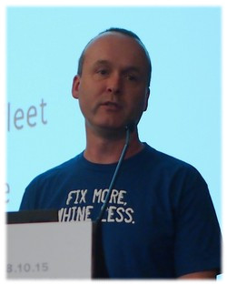
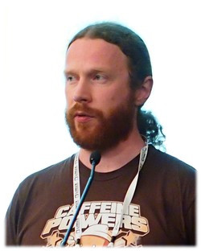

Benchmarking and performance trends
Chris started by saying that Facebook is now running 4.0 kernels on 30% of its (numerous) systems. The company currently applies about 90 patches on top of the latest stable update — a relatively small number — and there appear to be no serious problems. The size of Facebook's kernel team has doubled in the last year, but it has only added ten patches to the set; the rest have gone upstream.
On the storage side, Chris said, the story is "fantastic." The multiqueue block layer code has made a significant difference, leading to lower latencies, less system time, and good stability. He noted a few starvation issues, but didn't get into them. He also said that multiqueue is not particularly useful on rotating drives, but it makes a huge difference on solid-state drives.
With regard to networking, most of Facebook's internal traffic is IPv6;
some recent improvements in IPv6 performance have helped a lot there. The
size of the routing cache has been reduced significantly, taking out a lot
of memory overhead. The (bufferbloat-related) work to reduce the hardware

Futex performance has been improved by a patch to reduce contention on the internal bucket lock; it led to a 1% reduction in the amount of system time used. That patch is now in the mainline.
For filesystems, Chris said that there have been no stability problems experienced and no performance regressions. Facebook runs a large variety of workloads, but doesn't have any real issues with any of them.
The scheduler, instead, is the source of most problems that they have experienced at Facebook. There are problems in the wakeup code that lead to less-than-optimal CPU use and latencies. They have put a patch into the 4.3 kernel; it improves things for web-server workloads, but problems remain with other workloads.
In particular, Facebook has a workload where a small number of threads run at nearly 100% CPU time, while something on the order of 100 other threads will occasionally wake up to do some small task. This workload sees 10% higher latencies and gets 2-5% less user-mode CPU time with the 4.0 kernel than it did with 3.10. Somehow processes are just not getting to the CPU quickly when they become runnable; it seems that the scheduler is pushing the workload onto too few CPUs, leaving others idle. There is something in find_busiest_group() that is making the wrong decision, he said.
At this point, Mel took over to say that, from his point of view (watching over performance for SUSE), there have not been that many scheduler problems. His biggest complaint, instead, was with the Intel "pstate" driver, which handles CPU frequency and voltage management on Intel processors. This driver, he said, is making poor decisions. CPUs never seem to go above the minimum frequency on lightly-loaded machines, with results that look like a 10-20% scheduler performance regression, but are really due to pstate. This is, he said, a serious issue; we are at a point where we are extremely efficient at doing nothing, but not so good at actually doing work. As a result, a lot of users are disabling pstate altogether.
Mel also noted problems with client/server workloads that involve a lot of
synchronous wakeups (one process wakes the other and waits for some
result). The kernel would once try to keep both processes on the same CPU,
which would reduce
latencies, but that no longer happens. There are good reasons for the

Distributions are moving toward enabling multiqueue block I/O as the default, he said, but that can lead to performance regressions on rotating media. Jens Axboe noted that multiqueue is currently controlled by a single "on or off" setting. A near-future likely change is the addition of a flag that only enables multiqueue operation on non-rotational storage. The alternative would be to introduce an I/O scheduler for multiqueue I/O, but that would be a bigger step.
Another problem has surfaced within the memory-management subsystem, Mel said. Storage is now so fast that the kernel's memory reclaim decisions no longer make any sense. A lot of decisions are driven by congestion on backing-store devices but, now, there is never any congestion. The result is that the system ends up thrashing. There are a lot of assumptions in the memory-management code that no longer hold true; fixing those could be a long process.
Mel closed with a problem that looks like a kernel performance regression,
but isn't. It seems systemd is configuring all system daemons into the
same control group, which causes them to all compete against each other
under the block I/O controller. It is, he said, a user-space configuration
error that can hurt performance. There was some talk about whether it
makes sense to put kernel threads into control groups at all, but Peter
Zijlstra pointed out that this capability is useful for people who want to
isolate some CPUs from system activity. There may be other ways to
mitigate this problem from the kernel side, but it's not clear that they
are the best solution. Mel warned the group that there may be a fight
about this particular issue coming in the near future.
| Index entries for this article | |
|---|---|
| Kernel | Performance regressions |
| Conference | Kernel Summit/2015 |
Posted Nov 5, 2015 9:55 UTC (Thu)
by riteshsarraf (subscriber, #11138)
[Link]
When mq was introduced, it promised a lot of improvements. But as is mentioned here, the improvements are negligible or none on rotational drives.
Posted Nov 5, 2015 17:43 UTC (Thu)
by smurf (subscriber, #17840)
[Link] (1 responses)
… for some newer systems. There is plenty of rotating rust (or other relatively slow devices, like SD cards) left which still requires paying attention to storage latency.
Posted Dec 2, 2015 22:48 UTC (Wed)
by krakensden (guest, #72039)
[Link]
Posted Nov 10, 2015 16:36 UTC (Tue)
by ploxiln (subscriber, #58395)
[Link]
Benchmarking and performance trends
Benchmarking and performance trends
Benchmarking and performance trends
Benchmarking and performance trends